O que é:
Love, Death and Robots, a série de Tim Miller e David Fincher que é como um reboot de Heavy Metal com doses de Animatrix. Em primeiro lugar, vale destacar que a série não é recomendada ou indicada para menores de 18 anos, seguindo o mesmo estilo de Heavy Metal, que aliás, é não só a inspiração, mas também o motivo pelo qual temos uma série destas hoje, já que Tim Miller e David Fincher queriam criar um novo filme da franquia, mas o projeto que acabou não indo pra frente e se tornou Love, Death and Robots.
É uma série de antologia que reúne contos animados em uma mistura de ficção científica, fantasia, terror e comédia. Produzida por diretores do mundo todo, traz diferentes histórias sobre lobisomens soldados, caçadores de recompensas de cyborg e até mesmo aranhas alienígenas. Robôs, monstros de lixo e demônios sedentos também não faltam por lá. Tudo isso combinado com as técnicas e estilos de animação de cada cineasta ou estúdio envolvido no projeto. O que faz de Love, Death & Robots um dos títulos mais ousados do catálogo da Netflix, com muito sangue, sexo e violência.
Episódios Disponíveis
-
Volume 1:
- Os Três Robôs
- Para Além da Fenda de Áquila
- Era do Gelo
- A Vantagem de Sonnie
- Quando o Iogurte Assumiu o Controle
- A Guerra Secreta
- Sugador de Almas
- A Testemunha
- Proteção Contra Alienígenas
- Boa Caçada
- O Lixão
- Metamorfos
- Noite de Pescaria
- Ajudinha
- Histórias Alternativas
- Número da Sorte
- Ponto Cego
- Zima Blue
-
Volume 2:
-
Volume 3:
Curiosidades e Referências
Na série animada Love, Death & Robots, cada episódio conta uma história diferente e é baseado em um conto de ficção científica ou de terror; muitas vezes é um misto dos dois. Com esse universo tão amplo, com tantos filmes e outras obras populares do gênero, claro que a produção na Netflix não ia deixar a chance passar.
-
Atendimento Automático ao Cliente - Matrix (1999)
O episódio que abre a nossa lista é também o primeiro da segunda temporada. A história mostra a rebelião de um aspirador de pó robô contra sua dona e o cachorro. Após um intenso combate, a máquina usa uma arma de choque, mas a socialite desvia dos eletrodos à la Neo, no primeiro filme da trilogia Matrix.
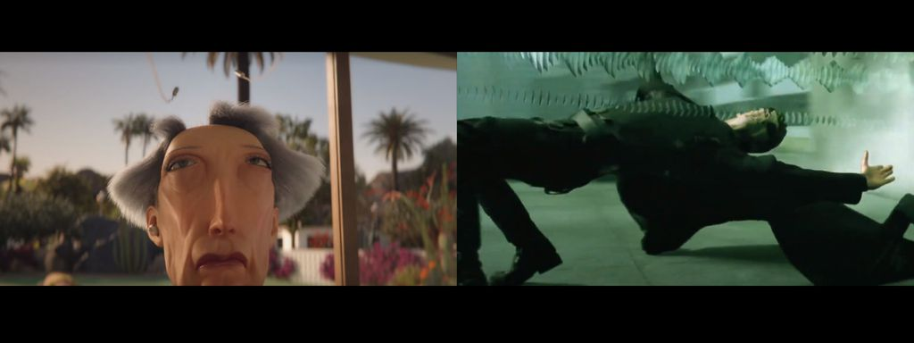 -
Proteção Contra Alienígenas - Matrix Revolutions (2003)
Após receber um alerta de que suas cercas estão sendo atacadas, um fazendeiro sai com seu robô para checar o que está acontecendo. Chegando lá, descobre que criaturas alienígenas estão invadindo a propriedade e atacando os animais. Se juntando com outros dois fazendeiros, eles combatem as criaturas com suas máquinas. O episódio tem vários momentos de semelhança com o terceiro filme da saga de Escolhido vivido por Keanu Reeves. As máquinas são bem parecidas com os mechas usados na batalha de Zion, assim como lembram o contexto da invasão, com as criaturas chegando por todos os lados.
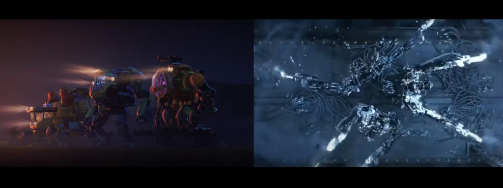 -
Os Três Robôs - Consoles Xbox
Em um mundo pós-apocalíptico onde humanidade foi extinta, três máquinas fazem um tour por uma cidade devastada. Passeando por diversos locais, eles entram em uma loja com diversos dispositivos eletrônicos. Entre eles, um X-Bot 3. A peça é citada como uma forma de entretenimento humano e como uma versão antecedente ao X-Bot 4000, um dos protagonistas. Com um “X” logo no começo, é impossível não associá-lo aos videogames da Microsoft.
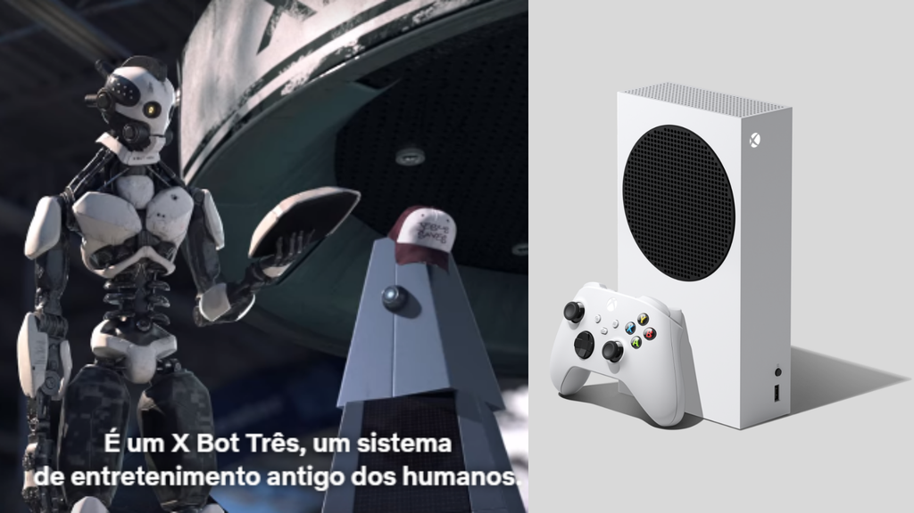 -
Os Três Robôs - Exploding Kittens
Em outro momento do episódio, as três máquinas estão em um apartamento abandonado. Um gato aparece, sobre no colo do X-Bot 4000 e começa a ronronar. Sem saber o que é aquilo, os robôs supõem que o felino tenha sido “ativado”. Ao buscar em seus próprios banco de dados, eles encontram o jogo de cartas e, sem saberem que é um brinquedo, deduzem que ele pode explodir quando para de receber carinho; sorte do bichano.
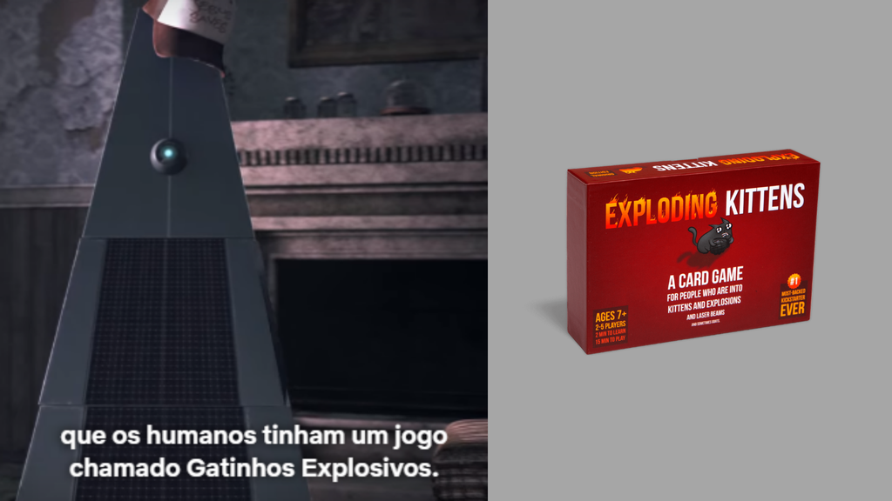 -
Snow no Deserto - Star Wars IV: Uma Nova Esperança (1977)
Um mercenário vaga por um deserto enquanto é procurado por caçadores de recompensas. Ao chegar em um bar, ele é surpreendido por uma gangue deles. Assim como o embate entre Han Solo e Greedo na versão original do primeiro filme da aclama Franquia de George Lucas, ele atira primeiro para evitar o pior.
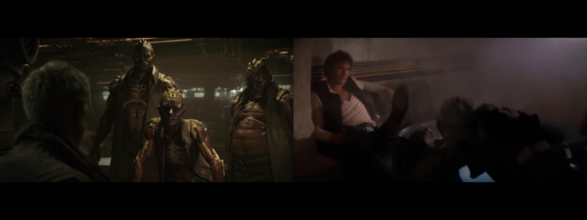 -
Pela Casa - Alien 3 (1992)
O episódio natalino mostra dois irmãos aguardando o Papai Noel. Quando eles ouvem barulhos na sala, descem para ver o bom velhinho de perto. Para a infeliz surpresa da irmã mais velha e do caçula, o simpático barbudo é uma horrenda criatura vermelha que os deixa encurralados. Vendo a cena, a imagem do xenomorfo - que também pode ter inspirado o monstro natalino - muito perto de Ripey vem imediatamente na cabeça. Fato curioso é que o terceiro filme da franquia Alien é dirigido por David Fincher, que também é um dos produtores de Love, Death & Robots.
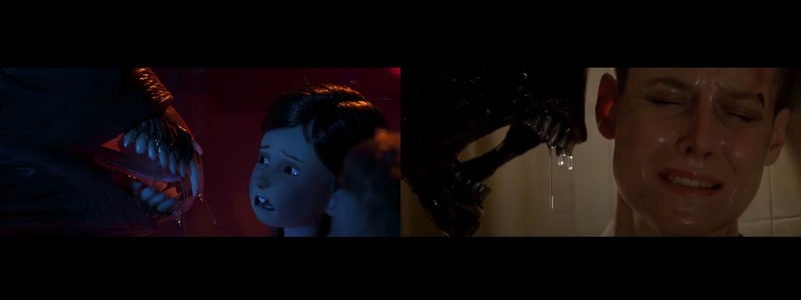 -
Ajudinha - Alien, O Oitavo Passageiro (1999)
Outra referência da popular criatura é no episódio que mostra uma astronauta sozinha e à deriva no espaço, após problemas técnicos de sua nave. Em um dos contatos com torre de controle, a protagonista diz que está em uma estação no satélite LV-426. A referência nada mais é do que ao planeta Acheron, onde o Capitão Dallas, Kane e Lambert exploram e acabam levando o xenomorfo para dentro da nave e gerando todos os piores acontecimentos do filme.
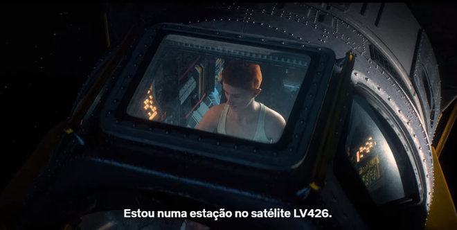 -
Ponto Cego - O Exterminador do Futuro 2: O Julgamento Final (1991)
O episódio da primeira temporada mostra uma equipe de robôs tentando invadir um caminhão. Para chegar ao objetivo, eles devem passar por diversas defesas e combates. Nem tudo dá certo e apenas o novato da equipe acaba sobrevivendo no final. Quando o resgate chega, ele vê o braço de seu companheiro no chão fazendo um “joinha”. A cena remete muito a cena da morte do T-800 (Arnold Schwarzenegger), quando o exterminador está afundando no fogo e se despede de John e Sarah Connor com a saudação.
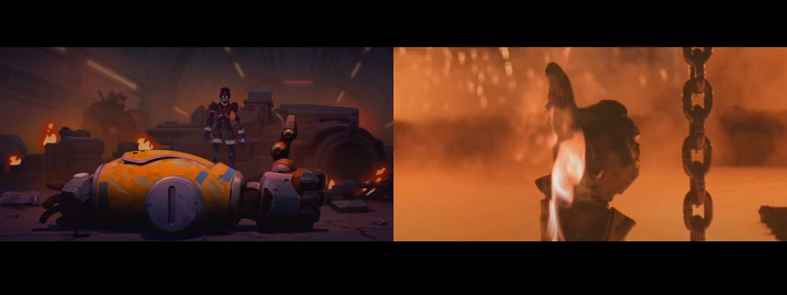 -
13, número da sorte - Superstições
Na trama do 13º episódio primeira temporada, uma nave amedronta todos os pilotos veteranos e novos recrutas. O motivo? Ninguém que fez uma missão na nave 13 conseguiu sair vivo. Para muitos, o número primo é um sinônimo de azar e coisas ruins, e isso é refletido até nos cinemas (ou a vida imitou a arte?). Dos clássicos de terror de Sexta-feira 13 com Jason até o disco 13 do Black Sabbath; Love, Death & Robots também aproveitou o “medo” das pessoas com o numeral para contar uma bela história envolvendo ele.
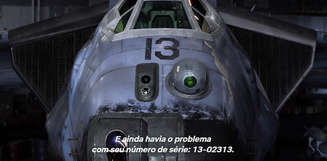 -
Boa Caçada - Mito chinês de Huli Jing
No estilo anime e com uma temática steampunk, a história da primeira temporada mostra o relacionamento entre um humano e uma criatura metamorfa durante a colonização inglesa em Hong Kong. A personagem Yan, que se transforma em um tipo de raposa, é inspirada na criatura mitológica chinesa Huli Jing, que também muda de forma e tem nove caudas. O animal também aparece com outros nomes e algumas características diferentes em alegorias coreanas e japonesas; outras aparições famosas da criatura na cultura pop é como Kurama, de Naruto, e Ahri, de League of Legends.
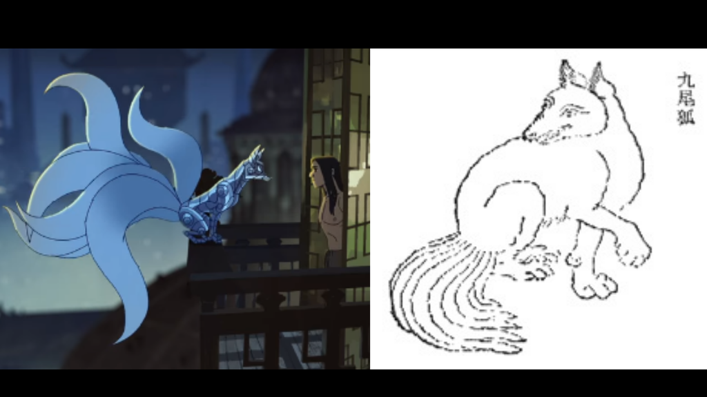
Episódios Interessantes
Aqui vai algumas recomendações de episódios marcantes:
Zima Blue (S01-ep18)
O episódio conta a história de um artista, que realizou várias modificações corporais e saiu pelo cosmos em busca de autoconhecimento e sentido de sua existência. Tais odisséias o trazem a obra que será retratada no episódio. Que deixa uma reflexão profunda e filosófica após o seu término.
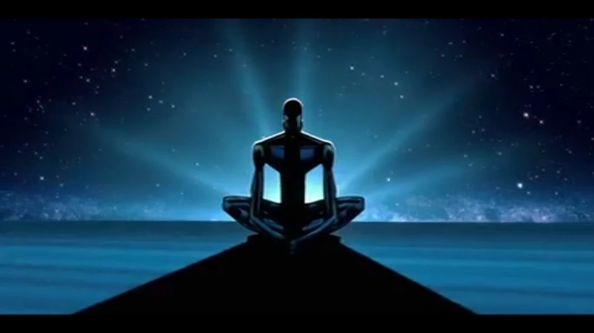Para Além da Fenda de Áquila (S01-ep2)
O segundo episódio da primeira temporada nos leva a uma viagem interestelar, onde, no ponto de partida ocorre um erro de rota, levando a tripulação a uma distância que não era esperada. Esse episódio conta com um belo plot e suas animações em alta resolução nos fazem imergir ainda mais no conto.
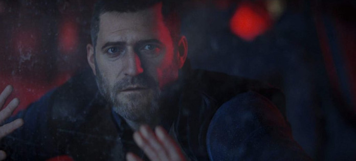Viagem Ruim (S03-ep02)
A tripulação de um navio de caça a tubarão é atacada por um crustáceo gigante, cujo tamanho e inteligência ameaçam a vida da tripulação e a ilha para a qual deseja uma passagem segura. Uma atmosfera cada vez mais tensa vai se formando ao decorrer do episódio, que é dirigido por David Fincher.
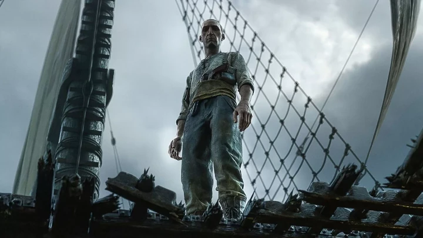